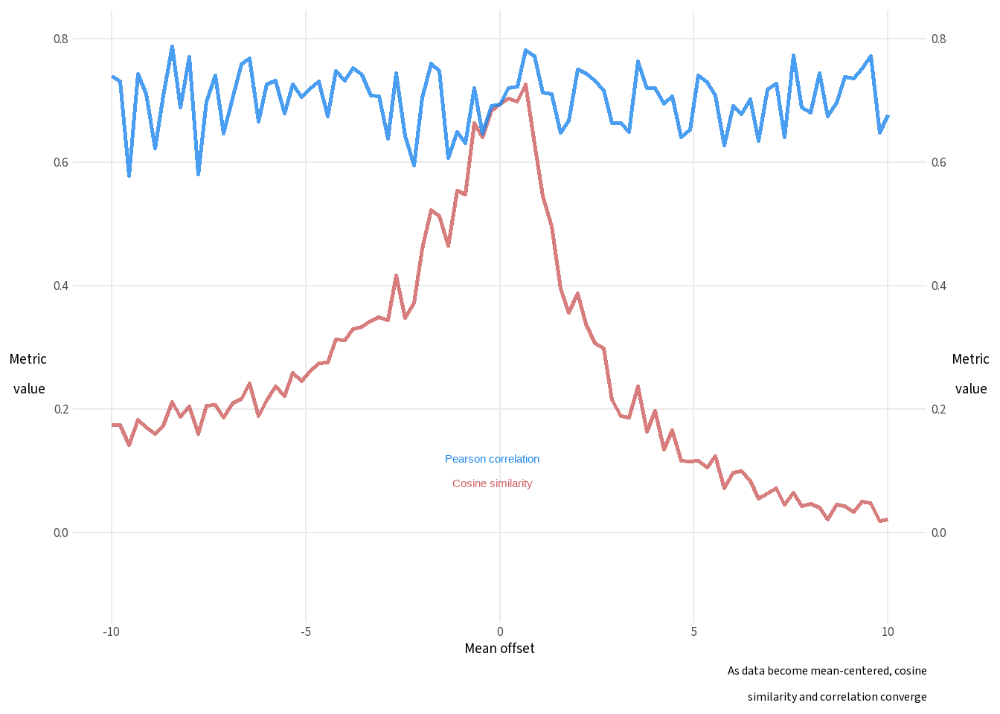

The Pearson correlation looks at the deviations from means - the data are mean centered, so the location of the data is not considered. Correlation asks whether \(y\) is more likely to be above its mean when \(x\) is above its mean, and vice versa.
Cosine similarity looks at the angle between two vectors, and the magnitude of the score is the extent to which the data vectors are pointing in the same direction. Magnitude in the data values plays no role, only direction.
What does it mean for two data vectors to have a direction?
Note that while correlation looks at mean-centered values, cosine similarity computes on the raw data values. So the relative location of the random variables can affect the similarity score.
There’s not a lot to compare between Peason correlation and cosine similarity. Correlation works for linear data, while cosine similarity measures the angle between two vectors. The main context where the direction of a vector may be meaningful is when a query vector of embeddings is used to retrieve a set of vectors from a reference set of embeddings. In this context, cosine similarity is identifying similarities in extracts of a text corpus. So cosine similarity is a tool used in natural language processing.
For the purposes of this challenge, the main point is to notice that Pearson correlation uses mean-centered data, while cosine similarity computes on raw data values, and therefore incorporates the location of the mean into the score. The practical effect of this is to draw the similarity score towards 1, and the similarity score and the correlation will diverge. As the mean of the data converges to zero, cosine similarity and correlation essentially become the same thing.
The challenge will illustrate.
Adding a constant to every element shifts both vectors toward 1 = (1, 1, …, 1). As the offset grows, both vectors point mostly in that direction — so the angle between them shrinks toward 0, and cosine similarity approaches 1.
The Challenge
Here is the challenge:
In a for-loop, generate x as 99 random numbers, and y as 99 independent random numbers plus x plus a mean offset. The mean offset varies between -10 and +10 in 91 steps over the 91 iterations of the for-loop. Calculate and store cosine similarity and correlation coefficient, and make a scatter plot of those metrics as a function of the difference of means between the two variables.
We’ll take this step by step
In a for-loop, generate x as 99 random numbers
The reference to a for-loop is for Python. Since R is vectorized, it would not be best practice code so we’ll do it in R style.
set.seed(345)x <-rnorm(99)
…and y as 99 independent random numbers plus x plus a mean offset. The mean offset varies between -10 and +10 in 91 steps over the 91 iterations of the for-loop. Calculate and store cosine similarity and correlation coefficient…
The vectorized version that should be used with R looks like this:
results <- purrr::map(offsets, \(offset) { # offset stores each iteration of offsets# for every value of offsets, do this: y <-rnorm(99) + x + offsettibble(offset = offset,cos_sim =sum(x * y) /sqrt( sum(x^2) *sum(y^2) ),corr =cor(x, y) )}) |>list_rbind() # after every iteration, store it as a row in resultsresults %>%head() %>%flextable()
offset
cos_sim
corr
-10.00
0.175
0.740
-9.78
0.175
0.731
-9.56
0.143
0.578
-9.33
0.183
0.743
-9.11
0.171
0.710
-8.89
0.160
0.623
…make a scatter plot of those metrics as a function of the difference of means between the two variables
ggplot(results, aes(offset)) +geom_line(aes(y=cos_sim),color="indianred",size=1,alpha=.8) +geom_line(aes(y=corr),color="dodgerblue2",size=1,alpha=.8) +scale_y_continuous(limits=c(-.1,.8),sec.axis=dup_axis()) +annotate("text", label="Cosine similarity", color="indianred",x=-.2,y=.08) +annotate("text",label="Pearson correlation",color="dodgerblue2",x=-.2,y=.12) +labs(x="Mean offset",y="Metric\nvalue",caption="As data become mean-centered, cosine\nsimilarity and correlation converge") +theme(axis.title.y=element_text(angle=0,vjust=.4),axis.title.y.right=element_text(angle=0,vjust=.4))

As the data values approach a mean of zero, the values of correlation and cosine similarity also converge. For centered data, Pearson correlation and cosine similarity give about the same score.